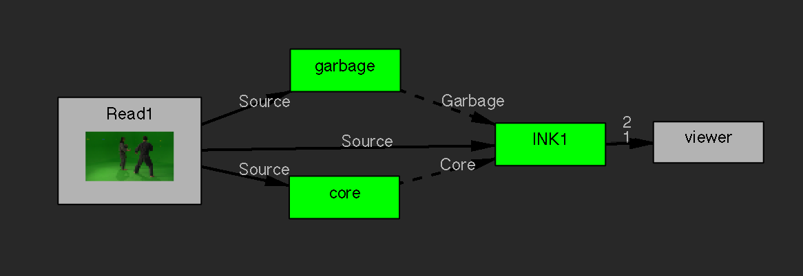
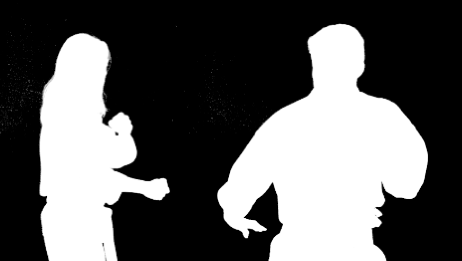
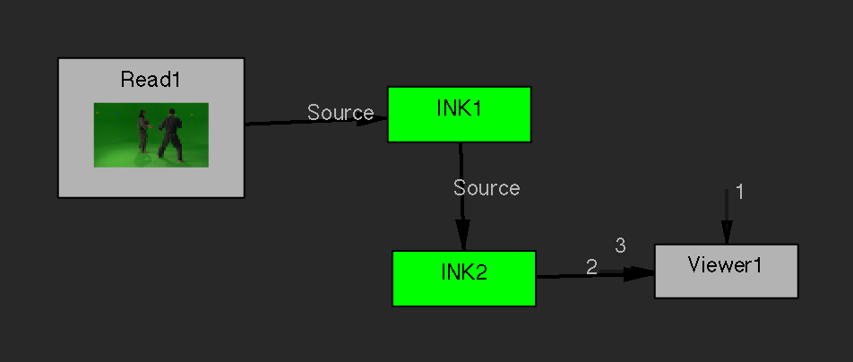

INK User Guide
Table of Contents
About INK
INK is a proportionate colour difference keyer for processing blue or green screen video. It will remove the background screen colour for you (performing both the matte generation and the despill), so then you can superimpose the video over a different background. It's easy to use, even if you have never used a keyer before.
INK is a general purpose keyer, producing a good result across a wide variety of materials and lighting conditions.
How To Install INK
Put INK.ofx.bundle in your OFX plugin path. On OS X this is usually:
/Library/OFX/Plugins
If that folder doesn't exist, you can create it. Or, if you prefer, use the environment variable:
OFX_PLUGIN_PATH
INK is Free Software
INK is free software: you can redistribute it and/or modify it under the terms of the GNU General Public License as published by the Free Software Foundation; either version 3 of the License, or (at your option) any later version. You can get the source code from casanico.com.
INK is distributed in the hope that it will be useful, but WITHOUT ANY WARRANTY; without even the implied warranty of merchantability or fitness for a particular purpose. See the GNU General Public License for more details.
How to Use INK
Basic Keying
- Set the Key Colour by sampling the blue or green background screen colour. The key colour will disappear and you will find the matte in the alpha channel. Sample from close to the foreground subject, being careful not to go too close or you will lose fine edge details.
- Adjust the Key Amount if you need to key more or less. You can key different amounts in shadows, midtones or highlights of the image by using the Tune Key Amount controls.
- Increasing the Key Balance will weight the key toward the least key channel. Decreasing it weights the key toward the middle key channel.
- Use Matte/Despill Balance to perform colour correction inside the keying operation. The colour you select for this parameter will effectively be excluded from the operation. Matte Balance will apply this to only the matte generation and Despill Balance will apply it to only the despill operation. Usually you will find the same value works well for both Matte Balance and Despill Balance.
- Composite the result (Output Mode `Premultiplied') over your desired background image using your application's composite `over' operation.
If your footage was shot perfectly, these steps will give you a perfect key. But in practice you will often need to do Combined Matte Keying.
Combined Matte Keying

Figure 1: INK nodes used as garbage and core mattes.
In an imperfect world we find that many shots have unevenly lit background screen, set equipment in the background, or the background screen colour spilling onto the foreground subjects. You remove the unwanted background artefacts by covering them with a garbage matte. The spill is removed by the keying operation but that will leave the matte somewhat transparent (because INK cannot distinguish spill from transparency), so you will need a core matte wherever you have spill. Alternatively you might need the core matte to serve a different purpose: to mask an area where you want neither keying nor despill to occur.
As a convenience, INK has Garbage and Core inputs. You can make the garbage and core mattes procedurally using INK (or any other keyer), or by drawing an animated rotobezier shape.
To make a procedural matte in INK, open the Matte Postprocessing section to reveal the following controls:
- Invert
- Black Point
- White Point
- Fill Holes
- Erode
- Blur
These operations don't influence the keying operation; they only affect the alpha channel coming out of the INK node. They are purely a convenience for when you are using INK to make garbage and core mattes. Matte Postprocessing options DEGRADE the matte, so use them ONLY for making garbage/core mattes.
Making the Garbage Matte
Figure 2: Garbage matte (source image courtesy of Steve Wright Digital FX).
To make a garbage matte, open the Matte Postprocess controls and:
- Enable Invert.
- Raise the White Point until you see no noise in the background, then lower the Black Point until you have a pure black foreground. You can vary the gamma in your viewer, or use the `Matte Monitor' Output Mode, to confirm this.
- Use Fill Holes if you need to patch any holes in the matte.
- Erode the matte to bring the background just clear of the edges of the foreground. Compare against the original so you can see how far from the edge you are.
- Blur the matte to feather out that edge. Don't try to get it perfect yet, because you will make your fine adjustments once you have the whole composite constructed.
- Name this INK node `garbage' and attach it to the Garbage input of your main INK node, like in Figure 1.
If you need to add a roto shape to your garbage matte, invert it and connect it as the Garbage input clip of your garbage matte INK node.
Making The Core Matte

Figure 3: Core matte.
Wherever you have spill, you will need a core matte. To make a core matte:
- Set the viewer to alpha mode. Now raise the Key Amount to slightly corrode the edge of the matte.
- In the Matte Postprocess controls, lower the White Point to make the matte solid (alpha of 1.0).
- Compare to the main INK node's matte, and adjust Key Amount and White Point so that the core matte is just marginally smaller than the main INK node's matte.
- You can use Fill Holes if you need to, but this can blur your edges, so keep an eye on edges with fine details such as hair.
- Ensure Despill Core is enabled.
If instead you need a holdout against despill (for example to key a blue eyed actor with a blue screen), cover that area with a core matte and disable the option Despill Core. Then INK will reduce the Key Amount by the core matte density.
Despill
INK performs despill in the same operation as it pulls the matte.
If you enable Despill Core, you should replace the spill colour that was removed with a substitute; the Replacement Colour. Sample a region of unaffected foreground that will make a good average of what the original colour would have been. You can then fine tune the result using:
- Replacement Amount: You can reduce this all the way to zero, which is the same as not having set Replacement Colour.
- Preserve Luminance: By default, the luminance of the despilled pixel is matched in the replacement. You can reduce this all the way down to a solid colour.
Finishing Edges
Figure 4: Matte Monitor.
The edges are where the action is. Use the `Matte Monitor' Output Mode to see the full extent of the current matte, the garbage and core mattes, and where they overlap. The idea of a matte monitor is to help you to discriminate edge/transparency from pure background and solid foreground by showing you both the holes in your matte and the background noise at the same time. INK sets any alpha >= 0.00001 or < 0.99999 to 0.5.
The Matte Monitor shows the current matte in the green channel, the garbage matte in blue and the core matte in red. This produces a colour coding of the mattes:
| black | pure background |
| bright green | solid foreground |
| mid green | edge/transparency |
| yellow | core matte over solid foreground |
| blue | garbage matte over pure background |
| aqua | garbage matte over edge/transparency |
When your garbage or core matte intrudes into your edges, it tends to degrade those edges. Any matte overlap shows up as blended colours: magenta, cyan, etc. It is on these colours that you need to focus your attention.
You can view the combined matte in the alpha channel. Or switch Output Mode to 'Matte Monitor Premult' to see a coloured version of the combined matte. Toggling the Core/Garbage inputs is another good way to see how the mattes relate.
Always remember that the RGB values of the Matte Monitor are not the actual matte density.
Multi-pass Keying
 If an image contains distinct regions of disparately coloured or textured edges, it may be best to pull a separate matte for each region and then combine them. The easy way to do this is to chain INK nodes (multi-pass keying).
You can output your INK matte directly into the Source of another INK node to build up the matte. Set the Output Mode to `Source with Matte' and connect that output to the Source input of the next INK node. You can add it to the core matte by setting Source Alpha to `Add to Core' (you can do this even if there is no Core input). A value of `Multiply' for this option will multiply the combined matte by the source alpha (note this does not show up in the Matte Monitor). A value of `Discard' means INK will totally ignore any alpha in the source clip.
How INK Works
…but this one is just right!
~Goldilocks
In colour difference keying, we make the image pixel's greatest channel (green in the case of greenscreen) less than its middle channel, to remove the key colour. We then need to adjust the proportions of red, green and blue to make the pixel colour what it would have been were the image originally photographed without the key colour present. We can't really know what that desired colour is because it was never captured in the photo. The best we can do is set the greatest channel to the average of the other two channels. As for what value those other two channels should be, we should again stick to the average. So for each channel we incorporate the proportionate difference between each channel of the image pixel and of the Key Colour. This is the proportionate colour difference method and it is how INK works. It is because it always resorts to the average that INK is a general purpose keyer.
To illustrate, the following equation shows how the least channel's output is calculated. The source pixel's least, middle and greatest channels are named C0, C1 and C2, respectively. Likewise K0, K1 and K2 represent the Key Colour's least, middle and greatest channels. Key Balance (defaulting to 0.5) is b. The result is R0:
\begin{equation} R_0 = (C_2-bC_1)\frac{\frac{\frac{C_0}{(C_2-bC_1)} - \frac{K_0}{(K_2-bK_1)}}{1+\frac{C_0}{(C_2-bC_1)}-(2-b)\frac{K_0}{(K_2-bK_1)}}}{1-\frac{\frac{C_0}{(C_2-bC_1)} - \frac{K_0}{(K_2-bK_1)}}{1+\frac{C_0}{(C_2-bC_1)}-(2-b)\frac{K_0}{(K_2-bK_1)}}} \end{equation}which reduces to:
\begin{equation} R_0 =\frac{(C_2-bC_1)(C_0(K_2-bK_1)-K_0(C_2-bC_1))}{b^2C_1K_1-b^2C_1K_0-bC_1K_2+bC_1K_0+bC_2K_0-bC_2K_1+C_2K_2-C_2K_0} \end{equation}INK then takes the lesser of C0 and R0 as its output for the least channel. The other channels are calculated in a similar way.